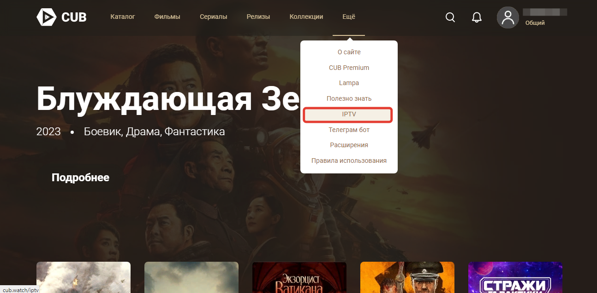

В программе Лампа есть возможность просмотра телеканалов (IPTV)
Самый простой способ это установка плагинов для просмотра телеканалов. Можно из магазина раширений в самой Лампе, либо прописать сторонние. В данный момент в Лампе доступен плагин "Телевидение by Skaz". Утановите плагин и после перезапуска приложения появится доступ к IPTV
Либо прописать ссылку на плагин вручную. Где найти?
Здесь:https://t.me/lampa_channels
http://lampatv.fun/faq/
Однако есть и неудобства. Вы получаете определенный набор каналов. Некоторые могут не работать. Некоторые доступны лишь по подписке. По этому если у вас есть свой плейлист или подписка на сервис IPTV лучше воспользоваться плагином от создателей Лампы.
Для этого переходим на сайт http://cub.watch/ и регестрируем аккаунт.
Теперь нужно добавить ссылку на свой плейлист. (К сожалению добавить плейлист файлом пока нельзя, но можно разместить его в облаке и получить ссылку. Как это сделать можно спросить в Гугл)
Для этого переходим на вкладку "IPTV"/Добавить новый плейлист/ вводим адрес
Запускаем Лампу, если была запущена - перезапускаем. Авторизуемся в приложении: "Настройки"/"Синхронизация"/"ДА". "Выполнить вход"/Ввести код Переходим в "Настройки"/"Расширения" Выбрать плагин "IPTV Beta"/"Установить". Перезапуск/ ДА После перезапуска появилась вкладка "IPTV". Заходим, выбираем плейлист. Запускаем нужный канал. Есть доступ к архиву если он присутствует в плейлисте.
